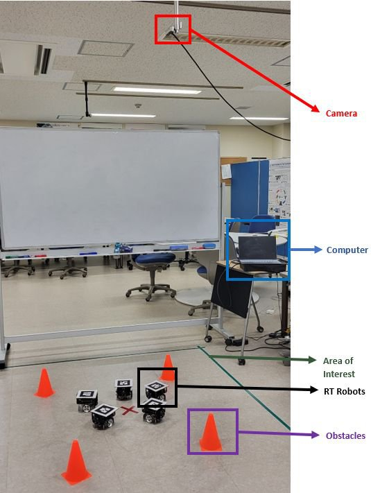
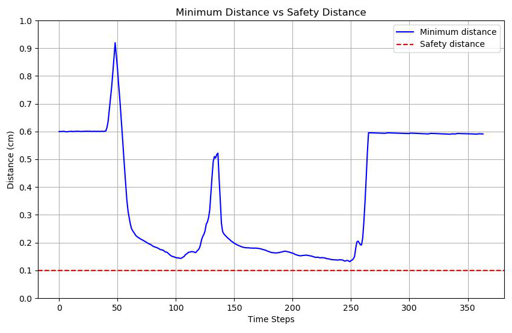

Wenbin Liu, Shucheng Jia, Mikhail Svinin
IEEE ICRAS 2025 · Undergraduate thesis, Ritsumeikan University · Advised by Prof. Wenbin Liu and Dr. Mikhail Svinin
Multi-robot intersection in Gazebo. Left: SE-CBF. Right: standard circular CBF.
For my undergraduate thesis I designed SE-CBF, a non-circular control barrier function for multi-robot collision avoidance. Control barrier functions (CBFs) are a standard tool for real-time safety, but they usually keep the same safety distance in every direction. Around rectangular or irregular obstacles that is too conservative: it blocks free space the robot could use, forces detours, and in crowded scenes leads to congestion. SE-CBF replaces the circle with a super-ellipse whose shape, size and orientation follow the obstacle, so robots keep a large margin where it matters and use the space where it doesn't.
A super-ellipse is the curve (x/α)n + (y/β)n = 1. With n = 2 it is the circle used by standard CBFs; as n grows it approaches a rectangle, and α and β stretch it independently along each axis. The barrier is h(x) = 1 − ((Px − Ox)/α)n − ((Py − Oy)/β)n, which is non-negative exactly when the robot at P is outside the boundary around the obstacle centre O.
Top: a circular CBF boundary around an elongated obstacle. Bottom: the super-ellipse boundary fits the obstacle's shape.
I tested SE-CBF in two Gazebo scenarios and on real robots:
Random-obstacle environment: four robot teams cross to the opposite side (2× speed).
Real robots tracked by an overhead camera avoid the obstacle (purple box).

At the roundabout, SE-CBF cut the median completion time from 123 s to 62 s and roughly doubled the robots' mean speed (median 0.0215 m/s vs. 0.0115 m/s) compared with the standard CBF. It did this without giving up safety: the average minimum distance to obstacles and other robots was 0.45 m with SE-CBF versus 0.35 m with the standard CBF, both above the 0.3 m safety distance.
In the exploration scenario, SE-CBF completed the task with all three group sizes: about 42 s with 4 robots, 52 s with 8 and 55 s with 12. Path length grew only modestly with density (about 7.8 to 9.0), and the minimum distance stayed above the safety threshold in every run, even with 12 robots. Across the scenarios, path redundancy dropped by 20–30% compared with a fixed safety distance.
On the real robots, all four passed the central obstacle and reached their goals in about 45 s with no collisions.
